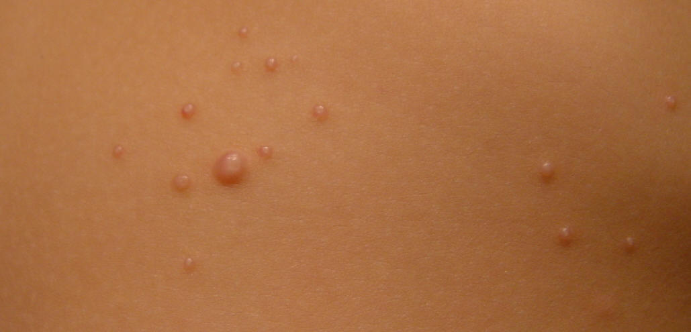
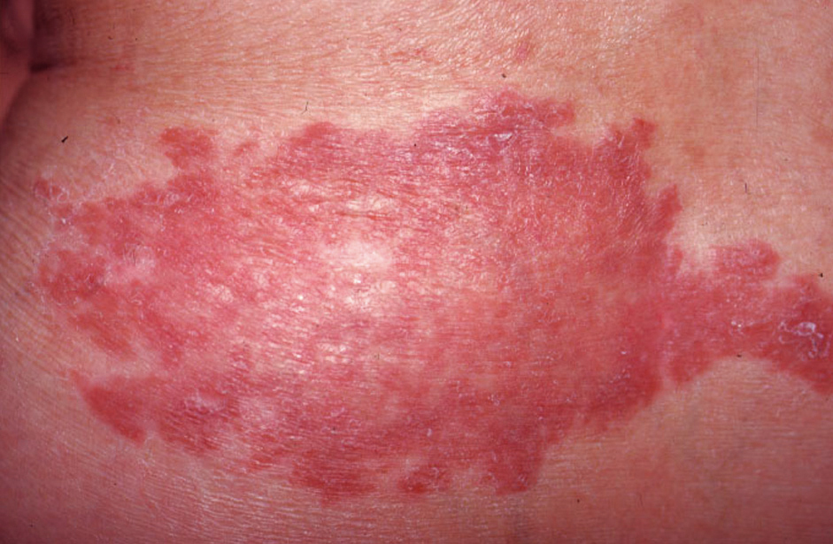
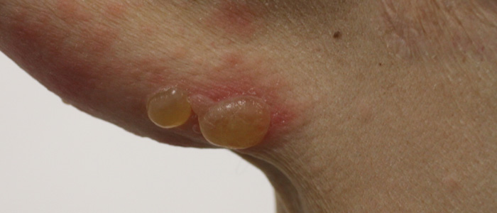
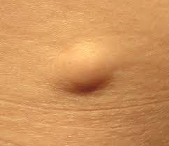
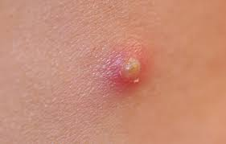
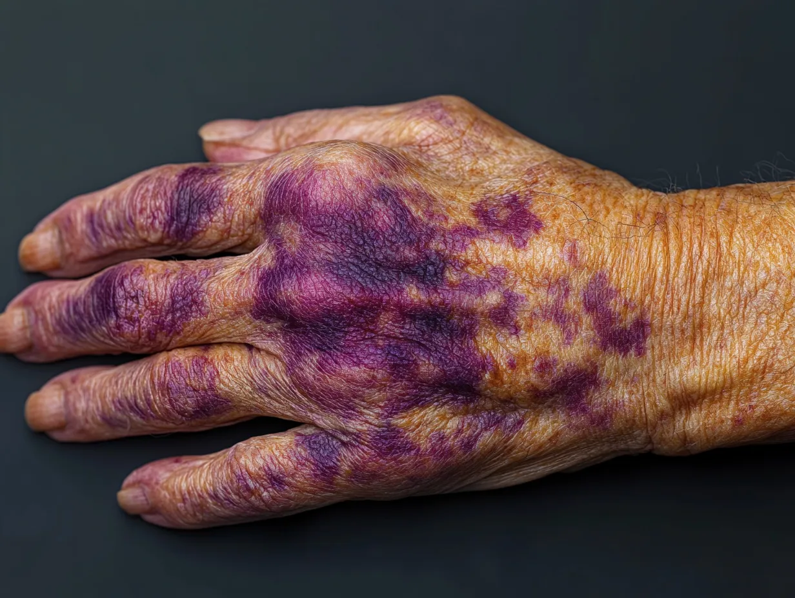
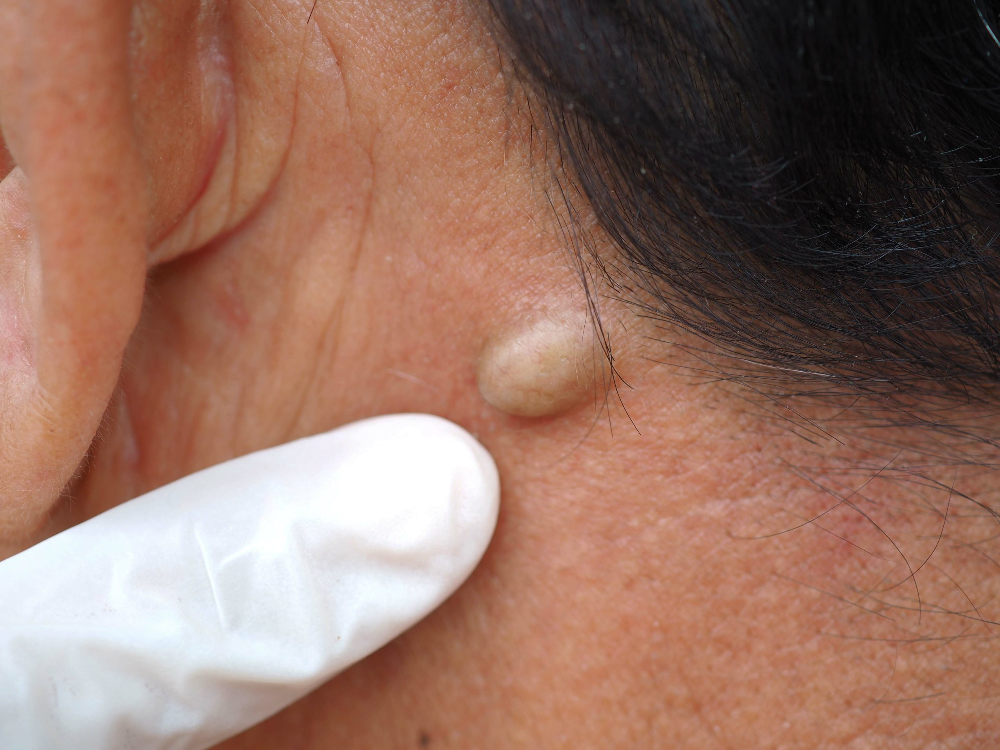
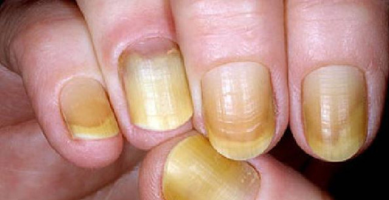
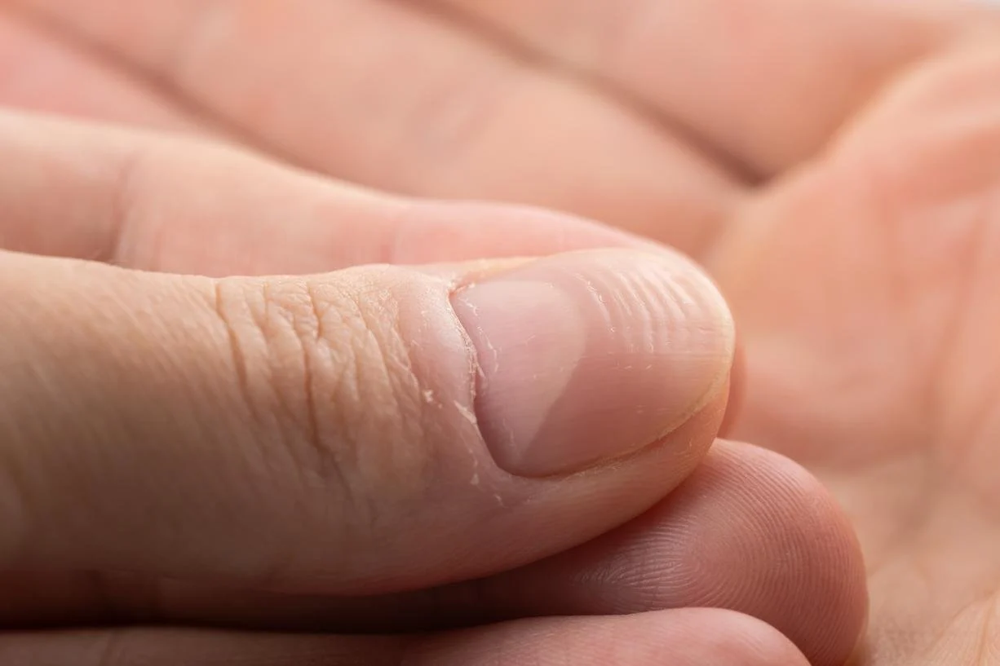
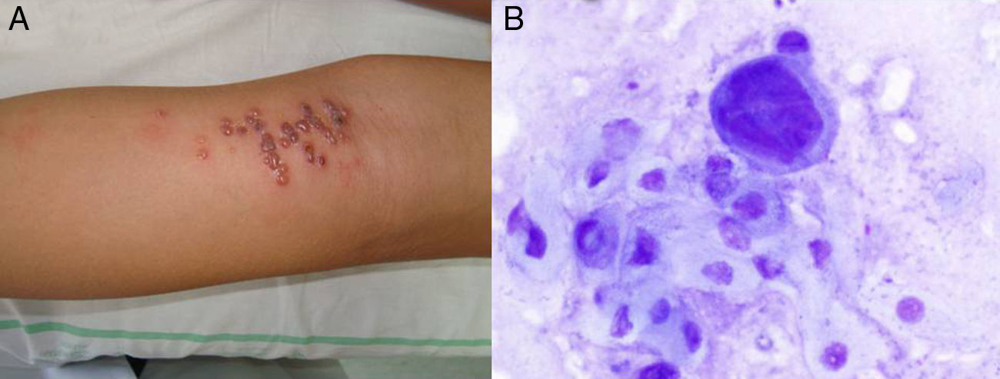

Valoración dermatológica
La piel es considerado el mayor sistema orgánico del cuerpo humano con funciones tan importantes como la protección y termo regulación del organismo. Por ello, es de vital importancia su integridad y pleno funcionamiento para garantizar una vida plena. En este contexto, se debe conocer los fundamentos de la valoración dermatológica.
Para la valoración dermatológica se harán uso de distintas herramientas e información. A su vez, la descripción de las lesiones se hará de forma sistemática, a saber:
- Valoración general.
- Se realizará una valoración de las variables que puedan afectar de forma global a la piel.
- Se realizará una valoración de la hidratación y temperatura de la piel.
- Valoración específica de la lesión
- Valoración de color de la lesión.
- Valoración del tipo de lesión.
- Valoración de su configuración / distribución.
- Valoración de la textura de la lesión.
Valoración de la piel
Valoración general
Para la realización de una correcta exploración dermatológica se debe contar con la siguiente información a priori de la persona, a saber:
- Antecedentes personales y/o familiares.
- Exposición ocupacional.
- Exposición a luz solar y otros tipos de radiación.
- Enfermedades sistémicas (Diabetes Mellitus, vasculopatías, infecciones…).
- Antecedentes sexuales y posibles infecciones de transmisión sexual.
- Uso de fármacos.
- Antecedentes de viajes realizados al extranjero (especialmente a zonas exóticas).
No toda la información a priori tendrá la misma relevancia. Se deberá adecuar a cada situación.
Como herramienta para la evaluación dermatológica se hará uso de la exploración visual acompañado de un aumento mediante lupa debido a que la mayoría de las lesiones cutáenas son diagnosticadas a través de su morfología y apariencia. A su vez, se puede hacer uso de diascopía y lámpara de Wood.
Finalmente, se debe recoger la siguiente información respecto al episodio actual de evaluación, a saber:
- Momento y duración de la sintomatología.
- Relación de la sintomatología con alguna actividad o intervención.
Valoración específica
Podemos encontrar los siguientes colores:
- Hipopigmentación: Disminución del color de la piel.
- Hiperpigmentación: Aumento del color de la piel.
- Cianosis: Coloración azulada de la piel secundario a disminución de oxígeno en sangre. Presente en estado de dificultad respiratoria.
- Eritema: Enrojecimiento de la piel por aumento de vascularización.
- Ictericia: Coloración amarillenta de la piel secundaria al aumento de la bilirrubina.
- Piel de naranja: Coloración anaranjada debido principalmente al consumo de beta-caroteno.
- Piel de color negro: Coloración negra. Pueden ser melanomas.
Conocida también como morfología primaria. Podemos valorar los tipos de las lesiones de la piel en función de elevación respecto al resto de la piel, su extensión, existencia o no de líquido en su interior y el tejido comprometido
| Nombre | Descripción | Foto |
|---|---|---|
| Mácula | Lesión plana (no palpable). Menor a 10 mm de diámetro. Cambio de color resto a la piel. |  |
| Pápula | Lesión plana elevada. Menor a 10 mm de diámetro. Cambio de color resto a la piel. |  |
| Placas | Lesiones elevadas. Mayor a 10 mm de diámetro. |  |
| Ampollas | Lesiones elevadas. Mayor a 10 mm de diámetro. Contienen líquido en su interior. |  |
| Nódulos | Lesiones elevadas. Mayor a 10 mm de diámetro. Se extiende dentro de la dermis y el tejido subcutáneo. |  |
| Vesícula | Lesiones elevadas. Menor a 10 mm de diámetro. Contienen líquido en su interior. |  |
| Pústula | Lesiones elevadas. Mayor a 10 mm de diámetro. Contienen pus en su interior. |  |
| Urticaria | Lesiones elevadas. Mayor a 10 mm de diámetro. Aparecen de forma deslocalizada y desorganizada. | |
| Escama | Acumulación de epitelio cornificado. |  |
| Costra | Formadas por suero, sangre o pus. |  |
| Petequias | Pequeños eritemas disminados no blanqueantes |  |
| Púrpura | Hemorragia extensa palpable. |  |
| Erosiones | Áreas con pérdida de la solución de la piel. |  |
| Atrofía | Piel seca y arrugada. |  |
| Cicatrices | Áreas de fibrosis que reemplazan la piel tras una lesión. |  |
| Telangiectasia | Vasos sanguíneos pequeños y permanentemente dilatados. |  |
Conocida también como morfología secundaria. Valora la forma de las lesiones.
| Nombre | Descripción |
|---|---|
| Lineales | Se disponen en línea recta |
| Anulares | Se forman en forma de anillo (con borde aplanado) |
| Numulares | En forma circular |
| Lesiones en blanco de tiro | Circulares con un halo rosado separado por un anillo pálido |
| Serpiginosas | Como una serpiente |
| Reticuladas | En patrón de red |
| Herpetiformes | Pápulas o vesiculas agrupadas |
| Nombre | Descripción |
|---|---|
| Verrugosas | Superficie irregular y áspera |
| Liquenificación | Engrosamiento de las marcas de la piel |
| Induración | Engrosamiento de la piel siendo dura al tacto |
| Umbilicales | Indentación central |
| Xantomas | Céreas de color amarillento |
| Nombre | Descripción | Imagen |
|---|---|---|
| Dermatografismo | Aparición de marcas eritematosas tras presionar la piel |  |
| Gangrena | Necrosis de la piel tanto húmeda como seca |  |
| Úlcera | Pérdida de solución de la piel afectando mínimo a la dermis |  |
| Fístula | Comunicación anómala entre una cavidad profunda y la piel u otra cavidad |  |
| Quiste | Masa llena de líquido semi solida encapsulada en el tejido subcutáneo o dermis |  |
Valoración del pelo y uñas
En cuanto a la fase vital del pelo se pueden distinguir 3 fases, a saber:
- Fase de crecimiento: Duración aproximada de entre 2 a 6 años en el cuero cabelludo.
- Fase de involución: Duración aproximada de entre 2 a 3 semanas.
- Fase de reposos: Duración de entre 2 a 3 meses deprendiendose el pelo del cuerpo.
La valoración del pelo se debe realizar de forma minuciosa, individual y exhaustiva registrando cualquier anomalía localizada. Por lo general, el pelo seco y quebradizo suele ser secundario a uso excesivo de cosméticos. El pelo graso suele ser secundario a secreción inadecuada de glándulas sebáceas.
En cuanto a las uñas, éstas son placas de queratina ubicadas en las manos y pies con funciones protectoras. En la uña encontramos distintas estructuras anatómicas, a saber:

En su valoración, debemos indicar tanto su color como su morfología.
| Nombre | Descripción | Imagen |
|---|---|---|
| Uñas de Terry | Color blanco intenso con zona delgada de color marrón |  |
| Uñas amarillas | Uñas engrosadas de color amarillento secundarias a problemas pulmonares o retención de líquido linfático |  |
| Líneas de Beau | Líneas blanqucidas con depresión secundarias a quimioterapia o a malnutrición |  |
| Paroniquia | Inflamación del tejido proximal a la uña |  |
| Acropaquia | Enderezamiento del ángulo normal de la uña y reblandecimiento de ésta secundaria a enfermedades pulmonares e hipóxia crónica |  |
Herramientas y pruebas diagnósticas
Se conoce a la técnica de presionar la lesión cutánea con un objeto transparente con el objetivo de “eliminar la sangre por presión” de la lesión. Esto permite valorar si la lesión en producida por una inflamación (palidece) a una lesión pigmentada o hemorrágica (que no palidece)

Uso de un dermatoscopio provisto de luz polarizada y lente de aumento con la capacidad de valorar las estructuras de la piel en detalle. Útil en el diagnóstico de melanomas u otras lesiones de alta complejidad.
Se trata de un dispositivo que emite luz ultravioleta la cual interacciona con diferentes sustancia presentes en lesiones como: infecciones micóticas y bacterianas, vitíligo o alteraciones de la pigmentación
La biopsia se conoce como al extracción de material orgánica (piel en este caso) para su análisis histológico.
Se trata de una prueba destinada a conocer la existencia de una reacción de hipersensibilidad por parte de la piel. Se colocan diferentes parches con varios alergenos sobre la piel y se estudia la reacción de ésta frente a los alérgenos.

Se trata de una prueba destinada a conocer la existencia de virus del herpes (simple o zoster). Para ello se rasca de ampolla o vesícula y se observa la muestra obtenida bajo tinción de Giemsa

Registro de las lesiones
Para el registro de las lesiones dermatológicas se puede hacer uso de la regla “ABCDE (f)”
| A | B | C | D | E | (f) |
|---|---|---|---|---|---|
| Asimetría de la lesión | Bordes (irregulares / Borrosos / Delimitados…) | Color | Diámetro | Evolución | Fugas (presencia de exudado / líquido) |